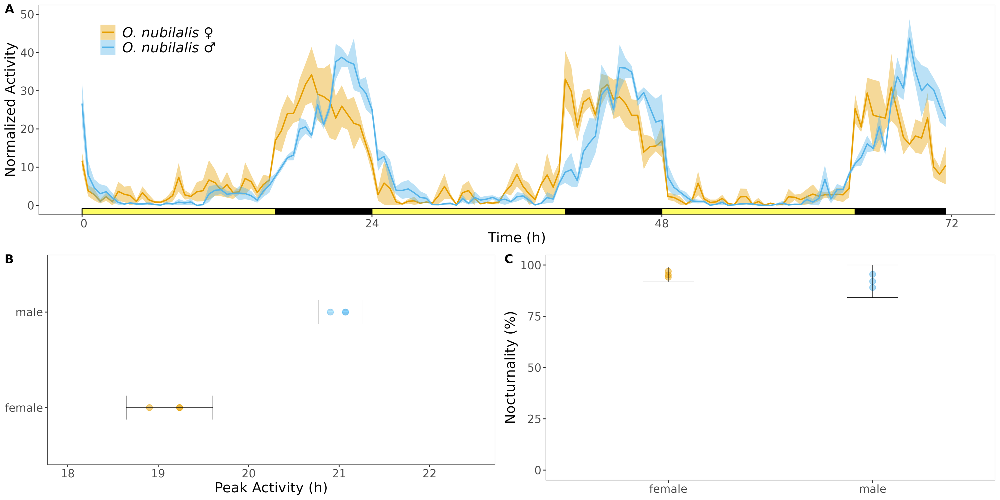

6 Analyze Movement Data
In our research, we utilize the Rethomics framework for data analysis. A more detailed walk-through can be found in the original Rethomics publication and online tutorial.
Some example transformations and visualizations of iLAM/DAM2 data are presented below:
- Read in metadata for experiment
metadata_o = read_delim("metadata_onub.csv", delim = ";", escape_double = FALSE, trim_ws = TRUE)
| file | start_datetime | stop_datetime | swap_datetime | region_id | species | pi | sex | strain |
|---|---|---|---|---|---|---|---|---|
| iLAM_BE_mf.txt | 2022-08-10 03:00:00 | 2022-08-18 02:58:00 | 2022-08-13 03:00:00 | 1 | O_nubilalis | mothra01 | male | be |
| iLAM_BE_mf.txt | 2022-08-10 03:00:00 | 2022-08-18 02:58:00 | 2022-08-13 03:00:00 | 2 | O_nubilalis | mothra02 | female | be |
| iLAM_BE_mf.txt | 2022-08-10 03:00:00 | 2022-08-18 02:58:00 | 2022-08-13 03:00:00 | 3 | O_nubilalis | mothra03 | female | be |
| iLAM_BE_mf.txt | 2022-08-10 03:00:00 | 2022-08-18 02:58:00 | 2022-08-13 03:00:00 | 4 | O_nubilalis | plantcam01 | female | be |
| iLAM_BE_mf.txt | 2022-08-10 03:00:00 | 2022-08-18 02:58:00 | 2022-08-13 03:00:00 | 5 | O_nubilalis | plantcam02 | male | be |
| iLAM_BE_mf.txt | 2022-08-10 03:00:00 | 2022-08-18 02:58:00 | 2022-08-13 03:00:00 | 6 | O_nubilalis | plantcam03 | male | be |
- Link metadata with the iLAM files
metadata_o = metadata_o %>% link_dam_metadata(result_dir = getwd())
iLAM_onub <- load_dam(metadata_o)
summary(iLAM_onub)
- Split data by identifiers
iLAM_BE = iLAM_onub[xmv(strain) == "be"]
- Add unique identifier (uid) for specific identification for each cage/experiment/species
iLAM_BE[, uid := 1:.N, meta=T]
- For each timepoint, collapse rows/observations into 30 minute bins
- The sum of every 15 rows; 15 = seq(0,14) = 30min bins
iLAM_BE[, activity_bin := rollapply(activity, list(seq(0, 14)),
FUN=function(x) sum(x, na.rm=TRUE),
partial = TRUE, fill = NA),
by = xmv(uid)]
- For each uid, retain only the 15th row (t) = 30min bins
iLAM_BE = iLAM_BE[, .SD[seq(1, .N, 15)], by = id]
- Calculate average activity across all bins to normalize activity_bins between cages
iLAM_BE[, uid := 1:.N, meta=T]
iLAM_BE[, fctr := .(10/mean(activity_bin)), by = xmv(uid)]
iLAM_BE[, .N, by=xmv(uid)] #verify that proper number of bins were kept
iLAM_BE[, .(mean_acti = 1/mean(activity_bin)), by=xmv(uid)]
- Multiple activity_bin by normalization factor
iLAM_BE[, acn := activity_bin*fctr]
- Visualize average across individuals for first 72 hours
p_be_activity = ggetho(iLAM_BE, aes(y=acn, colour=sex), time_wrap = hours(25)) +
stat_pop_etho(size=0.75) +
stat_ld_annotations(l_duration = as.numeric(hours(16)),
ld_colours = c("#FDFD66","black")) +
stat_ld_annotations(x_limits = days(c(3,7)),
ld_colours = c("grey", "black")) +
theme_bw() + theme(text = element_text(size = 12, family = "sans", color = 'black'),
panel.grid.major = element_blank(),
panel.grid.minor = element_blank(),
legend.position = c(0.12,0.7),
legend.text = element_text(size=10, face = "italic"),
legend.title = element_blank()) +
ylab("Activity") + xlab("Time (ZT)") +
scale_color_manual(values = c("#E69F00", "#56B4E9"),
labels = c(paste("O. nubilalis", "\u2640"),
paste("O. nubilalis", "\u2642"))) +
scale_fill_manual(values = c("#E69F00", "#56B4E9"),
labels = c(paste("O. nubilalis", "\u2640"),
paste("O. nubilalis", "\u2642"))) +
ylim(c(0,60))

Figure 6.1: Activity of European corn borer moths in LD. Activity was captured by iLAM across three days of LD (A). Phase of peak activity (B) and percent activity that occured at night (C).
Tips:
There are many other useful R packages that can be leveraged to analyze locomotor activity data in the DAM2 format. Some examples are:
- Rtivity publication and online shiny app
- RhythmicAlly publication and online repository
- VANESSA publication and online repository